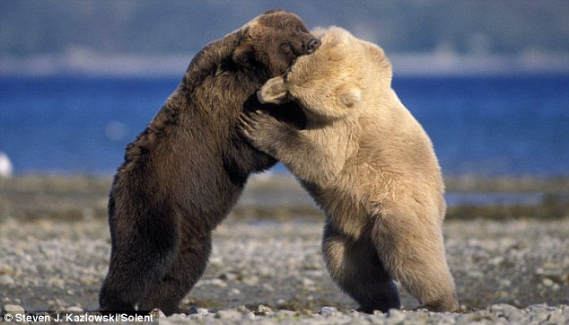
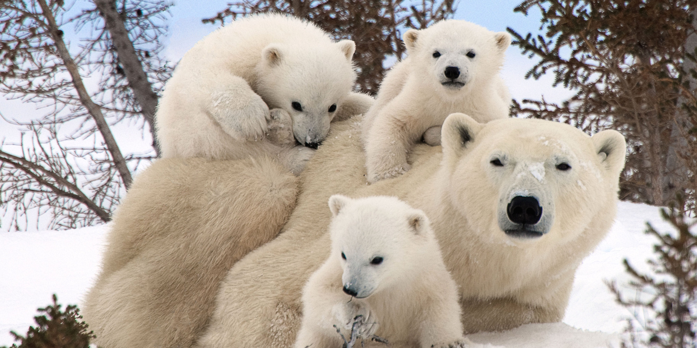

There are many different types of bears. Polar bears, Grizzley bears, Black bears, and Panda bears are all well known species world-wide. Although a Koala Bear is called a "bear" it actually is not in the bear family and is also not carniverous. Due to most species of bears living in the northern latitude they hibernate all Winter due to food scarcity. All bears are carniverous animals meaning they hunt and eat meat. The main food in most of their diet is fish. Bears are very good "fisherman" if you will. They stand in running streams and are able to catch fish right out of the water with their mouths. If a bear is a bad hunter it will not be able to eat and it will die. This is called survival of the fittest. Bears come in all colors, shapes, sizes and ecosystems, but they are also all born with instinct teaching them how to do things that are crucial for survival.
| Bear Species | American Black Bear | Polar Bear | Grizzley Bear |
|---|---|---|---|
| Average Height | 6 feet | 10 feet 6 in | 10 feet |
| Average Weight | 500 lb | 1,500 lb | 1,200 lb |
There are 8 species of bears on Earth. Their enviroment ranges from America, to China, and all the way to Antarctica. Most species of bears are doing relatively well with population, except for the Polar Bear. The Polar Bear was first put on the endangered list in 1973 when 5 countries joined together to try and save this beautiful beast. Although it was put on the endangered list 45 years ago it was not put on the Wildlife species preservation list until 2008. The Polar Bears existance is said to be threatened due to Global Warming. Antarctica is getting too warm resulting in melting of ice caps. This causes many problems with animals which hurts the Polar Bears food chain. It would be devasting to see the World's largest land carnivore become extinct because of human interaction.

I hope you enjoyed learning about bears, here is a list of the 3 most agressive hunter bears in the world!
For more information on Bears, you may visit: This Wikipedia Page on Bears.